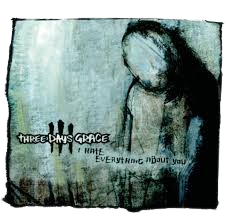
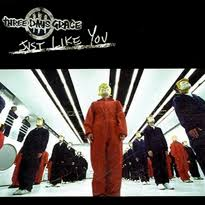

Three Days Grace es una banda canadiense de rock alternativo formada en 1992 en Norwood, Ontario. A lo largo de los años, han logrado consolidarse como una de las bandas más importantes dentro del género, siendo reconocidos por sus intensas letras emocionales y su mezcla de hard rock con elementos de post-grunge. Originalmente fundada por el guitarrista Brad Walst y el baterista Neil Sanderson, el grupo pasó por varias formaciones antes de encontrar su alineación más icónica con Adam Gontier como vocalista principal. La banda alcanzó el éxito con su álbum debut Three Days Grace (2003), que les dio a conocer con temas como "I Hate Everything About You" y "Just Like You", los cuales dominaron las listas de rock en ese momento. El estilo característico de la banda, que explora temas de desesperación, conflicto emocional y superación personal, resonó profundamente con una audiencia joven, lo que les permitió ganar una base de seguidores leales. A lo largo de su carrera, Three Days Grace ha lanzado varios álbumes exitosos como One-X (2006), Life Starts Now (2009), y Transit of Venus (2012), consolidando su lugar en la escena del rock contemporáneo. Aunque Adam Gontier dejó la banda en 2013, su reemplazo, Matt Walst (hermano de Brad), permitió a la banda seguir adelante con nuevos proyectos y continuar su legado musical. Con su estilo característico y un sonido que ha evolucionado a lo largo de los años, Three Days Grace sigue siendo una de las bandas más influyentes del rock moderno.
El primer disco exitoso de la banda Three Days Grace es su álbum del mismo nombre que la banda, Three Days Grace, lanzado el 22 de julio de 2003. Con un sonido que fusiona el rock alternativo y el metal, el álbum captó rápidamente la atención del público gracias a su energía cruda y letras intensas, a menudo centradas en el dolor emocional, la frustración y la lucha interna. Incluye temas como "I Hate Everything About You" y "Just Like You", que se convirtieron en sus mayores éxitos y ayudaron a cimentar la popularidad de la banda. El disco no solo marcó el inicio de la carrera de Three Days Grace, sino que también estableció su identidad dentro del rock moderno de principios de los 2000, destacándose por su enfoque oscuro y directo.
|  | Los dos mejores temazos del disco |
 |
| I Hate Everything About You | Just Like You |